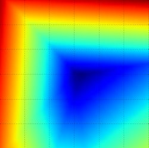
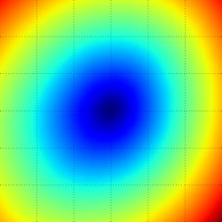
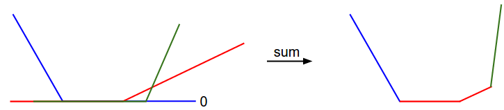
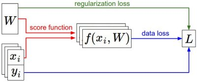

Aula 03 · Regularização
Regularização e Otimização
⚠️ Este conteúdo é uma tradução para português, gerada automaticamente por IA, a partir do material original em inglês do curso CS231n (Stanford University). Consulte o link "Fonte original" abaixo para o texto original.
Fonte original (inglês): Optimization: Stochastic Gradient Descent · CS231n, Stanford University ↗
Introdução
Na seção anterior, apresentamos dois componentes-chave no contexto da tarefa de classificação de imagens:
- Uma função de pontuação (parametrizada) que mapeia os pixels brutos da imagem para pontuações de classe (por exemplo, uma função linear)
- Uma função de perda que mede a qualidade de um conjunto particular de parâmetros com base em quão bem as pontuações induzidas concordavam com os rótulos de verdade (ground truth) nos dados de treinamento. Vimos que há muitas formas e versões disso (por exemplo, Softmax/SVM).
Concretamente, relembre que a função linear tinha a forma \( f(x_i, W) = W x_i \) e a SVM que desenvolvemos foi formulada como:
$$ L = \frac{1}{N} \sum_i \sum_{j\neq y_i} \left[ \max(0, f(x_i; W)_j - f(x_i; W)_{y_i} + 1) \right] + \alpha R(W) $$
Vimos que uma configuração dos parâmetros \(W\) que produzisse previsões para exemplos \(x_i\) consistentes com seus rótulos de verdade \(y_i\) também teria uma perda \(L\) muito baixa. Vamos agora introduzir o terceiro e último componente-chave: a otimização. Otimização é o processo de encontrar o conjunto de parâmetros \(W\) que minimiza a função de perda.
Antecipando o que vem a seguir: assim que entendermos como esses três componentes centrais interagem, vamos revisitar o primeiro componente (o mapeamento de função parametrizado) e estendê-lo para funções bem mais complicadas que um mapeamento linear: primeiro Redes Neurais inteiras, e depois Redes Neurais Convolucionais. As funções de perda e o processo de otimização permanecerão relativamente inalterados.
Visualizando a função de perda
As funções de perda que vamos analisar nesta disciplina costumam ser definidas sobre espaços de altíssima dimensionalidade (por exemplo, no CIFAR-10, a matriz de pesos de um classificador linear tem tamanho [10 x 3073], totalizando 30.730 parâmetros), o que torna difícil visualizá-las. No entanto, ainda podemos ganhar alguma intuição fatiando o espaço de alta dimensionalidade ao longo de raios (1 dimensão), ou ao longo de planos (2 dimensões). Por exemplo, podemos gerar uma matriz de pesos aleatória \(W\) (que corresponde a um único ponto no espaço), e então caminhar ao longo de um raio, registrando o valor da função de perda ao longo do caminho. Ou seja, podemos gerar uma direção aleatória \(W_1\) e calcular a perda ao longo dessa direção avaliando \(L(W + a W_1)\) para diferentes valores de \(a\). Esse processo gera um gráfico simples, com o valor de \(a\) no eixo x e o valor da função de perda no eixo y. Também podemos realizar o mesmo procedimento em duas dimensões, avaliando a perda \( L(W + a W_1 + b W_2) \) enquanto variamos \(a, b\). Em um gráfico, \(a, b\) poderiam então corresponder ao eixo x e ao eixo y, e o valor da função de perda pode ser visualizado com uma cor:



Podemos explicar a estrutura linear por partes da função de perda examinando a matemática. Para um único exemplo, temos:
$$ L_i = \sum_{j\neq y_i} \left[ \max(0, w_j^Tx_i - w_{y_i}^Tx_i + 1) \right] $$
Fica claro pela equação que a perda de dados de cada exemplo é uma soma de funções lineares de \(W\) (zeradas por baixo, devido à função \(\max(0,-)\)). Além disso, cada linha de \(W\) (ou seja, \(w_j\)) às vezes tem um sinal positivo à sua frente (quando corresponde a uma classe errada para um exemplo), e às vezes um sinal negativo (quando corresponde à classe correta para esse exemplo). Para deixar isso mais explícito, considere um conjunto de dados simples que contém três pontos 1-dimensionais e três classes. A perda SVM completa (sem regularização) se torna:
$$ \begin{align} L_0 = & \max(0, w_1^Tx_0 - w_0^Tx_0 + 1) + \max(0, w_2^Tx_0 - w_0^Tx_0 + 1) \\\\ L_1 = & \max(0, w_0^Tx_1 - w_1^Tx_1 + 1) + \max(0, w_2^Tx_1 - w_1^Tx_1 + 1) \\\\ L_2 = & \max(0, w_0^Tx_2 - w_2^Tx_2 + 1) + \max(0, w_1^Tx_2 - w_2^Tx_2 + 1) \\\\ L = & (L_0 + L_1 + L_2)/3 \end{align} $$
Como esses exemplos são 1-dimensionais, os dados \(x_i\) e os pesos \(w_j\) são números. Olhando, por exemplo, para \(w_0\), alguns dos termos acima são funções lineares de \(w_0\) e cada um deles é limitado (clamped) em zero. Podemos visualizar isso da seguinte forma:

Como observação lateral, você deve ter suspeitado, pelo seu formato de tigela, que a função de custo da SVM é um exemplo de função convexa. Há uma grande quantidade de literatura dedicada a minimizar eficientemente esses tipos de funções, e você também pode fazer uma disciplina de Stanford sobre o tema (otimização convexa). Uma vez que estendermos nossas funções de pontuação \(f\) para Redes Neurais, nossas funções objetivo se tornarão não convexas, e as visualizações acima não mostrarão tigelas, mas terrenos complexos e acidentados.
Funções de perda não diferenciáveis. Como nota técnica, você também pode notar que as dobras na função de perda (devido à operação de máximo) tecnicamente tornam a função de perda não diferenciável, porque nessas dobras o gradiente não é definido. No entanto, o subgradiente ainda existe e é comumente usado em seu lugar. Nesta disciplina, usaremos os termos subgradiente e gradiente de forma intercambiável.
Otimização
Para reiterar, a função de perda nos permite quantificar a qualidade de qualquer conjunto particular de pesos W. O objetivo da otimização é encontrar W que minimize a função de perda. Vamos agora motivar e desenvolver aos poucos uma abordagem para otimizar a função de perda. Para quem já chega a esta disciplina com experiência prévia, esta seção pode parecer estranha, já que o exemplo de trabalho que usaremos (a perda SVM) é um problema convexo, mas tenha em mente que nosso objetivo é, eventualmente, otimizar Redes Neurais, para as quais não podemos usar facilmente nenhuma das ferramentas desenvolvidas na literatura de Otimização Convexa.
Estratégia #1: uma primeira ideia bem ruim: busca aleatória
Já que é tão simples verificar quão bom é um determinado conjunto de parâmetros W, a primeira ideia (bem ruim) que pode vir à mente é simplesmente experimentar muitos pesos aleatórios diferentes e acompanhar o que funciona melhor. Esse procedimento poderia ser assim:
# assume que X_train são os dados, onde cada coluna é um exemplo (por exemplo, 3073 x 50.000)
# assume que Y_train são os rótulos (por exemplo, um array 1D de 50.000)
# assume que a função L avalia a função de perda
bestloss = float("inf") # Python atribui o maior valor de ponto flutuante possível
for num in range(1000):
W = np.random.randn(10, 3073) * 0.0001 # gera parâmetros aleatórios
loss = L(X_train, Y_train, W) # calcula a perda sobre todo o conjunto de treinamento
if loss < bestloss: # acompanha a melhor solução
bestloss = loss
bestW = W
print 'in attempt %d the loss was %f, best %f' % (num, loss, bestloss)
# imprime:
# in attempt 0 the loss was 9.401632, best 9.401632
# in attempt 1 the loss was 8.959668, best 8.959668
# in attempt 2 the loss was 9.044034, best 8.959668
# in attempt 3 the loss was 9.278948, best 8.959668
# in attempt 4 the loss was 8.857370, best 8.857370
# in attempt 5 the loss was 8.943151, best 8.857370
# in attempt 6 the loss was 8.605604, best 8.605604
# ... (truncado: continua por 1000 linhas)No código acima, vemos que experimentamos vários vetores de pesos aleatórios W, e alguns deles funcionam melhor que outros. Podemos pegar os melhores pesos W encontrados por essa busca e testá-los no conjunto de teste:
# Assume que X_test é [3073 x 10000], Y_test [10000 x 1]
scores = Wbest.dot(Xte_cols) # 10 x 10000, as pontuações de classe para todos os exemplos de teste
# encontra o índice com a maior pontuação em cada coluna (a classe prevista)
Yte_predict = np.argmax(scores, axis = 0)
# e calcula a acurácia (fração de previsões corretas)
np.mean(Yte_predict == Yte)
# retorna 0.1555Com o melhor W, isso dá uma acurácia de cerca de 15,5%. Dado que adivinhar as classes completamente ao acaso atinge apenas 10%, esse não é um resultado tão ruim para uma solução de busca aleatória tão primitiva!
Ideia central: refinamento iterativo. Claro, acontece que podemos fazer muito melhor. A ideia central é que encontrar o melhor conjunto de pesos W é um problema muito difícil, ou até impossível (especialmente quando W contém pesos de redes neurais complexas inteiras), mas o problema de refinar um conjunto específico de pesos W para que fique um pouco melhor é significativamente menos difícil. Em outras palavras, nossa abordagem será começar com um W aleatório e então refiná-lo iterativamente, tornando-o um pouco melhor a cada vez.
Nossa estratégia será começar com pesos aleatórios e refiná-los iterativamente ao longo do tempo, para obter uma perda menor.
Analogia do caminhante vendado. Uma analogia que você pode achar útil daqui em diante é se imaginar caminhando por um terreno montanhoso, vendado, tentando chegar ao fundo. No exemplo do CIFAR-10, as montanhas são de 30.730 dimensões, já que as dimensões de W são 10 x 3073. Em cada ponto da montanha, alcançamos uma perda particular (a altura do terreno).
Estratégia #2: busca local aleatória
A primeira estratégia em que você pode pensar é tentar estender um pé em uma direção aleatória e então dar um passo somente se ele levar para baixo. Concretamente, começaremos com um \(W\) aleatório, geraremos perturbações aleatórias \( \delta W \) sobre ele e, se a perda no \(W + \delta W\) perturbado for menor, realizaremos uma atualização. O código para esse procedimento é o seguinte:
W = np.random.randn(10, 3073) * 0.001 # gera um W inicial aleatório
bestloss = float("inf")
for i in range(1000):
step_size = 0.0001
Wtry = W + np.random.randn(10, 3073) * step_size
loss = L(Xtr_cols, Ytr, Wtry)
if loss < bestloss:
W = Wtry
bestloss = loss
print 'iter %d loss is %f' % (i, bestloss)Usando o mesmo número de avaliações da função de perda de antes (1000), essa abordagem atinge uma acurácia de classificação no conjunto de teste de 21,4%. Isso é melhor, mas ainda desperdiça recursos e é computacionalmente caro.
Estratégia #3: seguindo o gradiente
Na seção anterior, tentamos encontrar uma direção no espaço de pesos que melhorasse nosso vetor de pesos (e nos desse uma perda menor). Acontece que não há necessidade de buscar aleatoriamente por uma boa direção: podemos calcular a melhor direção ao longo da qual devemos mudar nosso vetor de pesos, que é matematicamente garantida como a direção de descida mais íngreme (pelo menos no limite, à medida que o tamanho do passo tende a zero). Essa direção estará relacionada ao gradiente da função de perda. Em nossa analogia da caminhada, essa abordagem corresponde, grosso modo, a sentir a inclinação da montanha sob nossos pés e dar um passo na direção que parece mais íngreme.
Em funções unidimensionais, a inclinação é a taxa instantânea de variação da função em qualquer ponto de interesse. O gradiente é uma generalização da inclinação para funções que não recebem um único número, mas um vetor de números. Além disso, o gradiente é apenas um vetor de inclinações (mais comumente chamadas de derivadas) para cada dimensão no espaço de entrada. A expressão matemática para a derivada de uma função 1-D em relação à sua entrada é:
$$ \frac{df(x)}{dx} = \lim_{h\ \to 0} \frac{f(x + h) - f(x)}{h} $$
Quando as funções de interesse recebem um vetor de números em vez de um único número, chamamos as derivadas de derivadas parciais, e o gradiente é simplesmente o vetor de derivadas parciais em cada dimensão.
Calculando o gradiente
Há duas formas de calcular o gradiente: uma forma lenta, aproximada, mas fácil (gradiente numérico), e uma forma rápida, exata, mas mais sujeita a erros, que requer cálculo (gradiente analítico). Vamos agora apresentar as duas.
Calculando o gradiente numericamente com diferenças finitas
A fórmula dada acima nos permite calcular o gradiente numericamente. Aqui está uma função genérica que recebe uma função f, um vetor x no qual avaliar o gradiente, e retorna o gradiente de f em x:
def eval_numerical_gradient(f, x):
"""
uma implementação ingênua do gradiente numérico de f em x
- f deve ser uma função que recebe um único argumento
- x é o ponto (array numpy) no qual avaliar o gradiente
"""
fx = f(x) # avalia o valor da função no ponto original
grad = np.zeros(x.shape)
h = 0.00001
# itera sobre todos os índices de x
it = np.nditer(x, flags=['multi_index'], op_flags=['readwrite'])
while not it.finished:
# avalia a função em x+h
ix = it.multi_index
old_value = x[ix]
x[ix] = old_value + h # incrementa em h
fxh = f(x) # avalia f(x + h)
x[ix] = old_value # restaura ao valor anterior (muito importante!)
# calcula a derivada parcial
grad[ix] = (fxh - fx) / h # a inclinação
it.iternext() # avança para a próxima dimensão
return gradSeguindo a fórmula do gradiente dada acima, o código acima itera sobre todas as dimensões uma a uma, faz uma pequena alteração h ao longo dessa dimensão e calcula a derivada parcial da função de perda ao longo dessa dimensão observando o quanto a função mudou. A variável grad mantém o gradiente completo ao final.
Considerações práticas. Note que, na formulação matemática, o gradiente é definido no limite quando h tende a zero, mas na prática costuma ser suficiente usar um valor bem pequeno (como 1e-5, como no exemplo). Idealmente, você quer usar o menor tamanho de passo que não leve a problemas numéricos. Além disso, na prática, costuma funcionar melhor calcular o gradiente numérico usando a fórmula da diferença centrada: \( [f(x+h) - f(x-h)] / 2 h \). Veja a wiki para detalhes.
Podemos usar a função dada acima para calcular o gradiente em qualquer ponto e para qualquer função. Vamos calcular o gradiente para a função de perda do CIFAR-10 em algum ponto aleatório no espaço de pesos:
# para usar o código genérico acima, queremos uma função que receba um único argumento
# (os pesos, no nosso caso), então fechamos sobre X_train e Y_train
def CIFAR10_loss_fun(W):
return L(X_train, Y_train, W)
W = np.random.rand(10, 3073) * 0.001 # vetor de pesos aleatório
df = eval_numerical_gradient(CIFAR10_loss_fun, W) # obtém o gradienteO gradiente nos diz a inclinação da função de perda ao longo de cada dimensão, que podemos usar para fazer uma atualização:
loss_original = CIFAR10_loss_fun(W) # a perda original
print 'original loss: %f' % (loss_original, )
# vamos ver o efeito de múltiplos tamanhos de passo
for step_size_log in [-10, -9, -8, -7, -6, -5,-4,-3,-2,-1]:
step_size = 10 ** step_size_log
W_new = W - step_size * df # nova posição no espaço de pesos
loss_new = CIFAR10_loss_fun(W_new)
print 'for step size %f new loss: %f' % (step_size, loss_new)
# imprime:
# original loss: 2.200718
# for step size 1.000000e-10 new loss: 2.200652
# for step size 1.000000e-09 new loss: 2.200057
# for step size 1.000000e-08 new loss: 2.194116
# for step size 1.000000e-07 new loss: 2.135493
# for step size 1.000000e-06 new loss: 1.647802
# for step size 1.000000e-05 new loss: 2.844355
# for step size 1.000000e-04 new loss: 25.558142
# for step size 1.000000e-03 new loss: 254.086573
# for step size 1.000000e-02 new loss: 2539.370888
# for step size 1.000000e-01 new loss: 25392.214036Atualização na direção negativa do gradiente. No código acima, note que, para calcular W_new, estamos fazendo uma atualização na direção negativa do gradiente df, já que desejamos que nossa função de perda diminua, não aumente.
Efeito do tamanho do passo. O gradiente nos diz a direção em que a função tem a taxa de aumento mais íngreme, mas não nos diz o quão longe, nessa direção, devemos dar o passo. Como veremos mais adiante no curso, escolher o tamanho do passo (também chamado de taxa de aprendizado) se tornará um dos ajustes de hiperparâmetro mais importantes (e mais dolorosos) no treinamento de uma rede neural. Na nossa analogia da descida da montanha vendados, sentimos a montanha sob nossos pés inclinando-se em alguma direção, mas o comprimento do passo que devemos dar é incerto. Se movermos os pés com cuidado, podemos esperar um progresso consistente, porém muito pequeno (isso corresponde a ter um tamanho de passo pequeno). Por outro lado, podemos optar por dar um passo grande e confiante, na tentativa de descer mais rápido, mas isso pode não compensar. Como você pode ver no exemplo de código acima, em algum ponto dar um passo maior resulta em uma perda maior, já que "passamos do ponto".

Um problema de eficiência. Você deve ter notado que avaliar o gradiente numérico tem complexidade linear no número de parâmetros. No nosso exemplo, tínhamos 30.730 parâmetros no total e, portanto, precisamos realizar 30.731 avaliações da função de perda para calcular o gradiente e realizar apenas uma única atualização de parâmetros. Esse problema só piora, já que Redes Neurais modernas podem facilmente ter dezenas de milhões de parâmetros. Claramente, essa estratégia não é escalável, e precisamos de algo melhor.
Calculando o gradiente analiticamente com cálculo
O gradiente numérico é muito simples de calcular usando a aproximação por diferenças finitas, mas a desvantagem é que ele é aproximado (já que temos que escolher um valor pequeno de h, enquanto o verdadeiro gradiente é definido como o limite quando h tende a zero), e que é computacionalmente muito caro de calcular. A segunda forma de calcular o gradiente é analiticamente, usando cálculo, o que nos permite derivar uma fórmula direta para o gradiente (sem aproximações) que também é muito rápida de calcular. No entanto, diferente do gradiente numérico, ele pode ser mais sujeito a erros de implementação, razão pela qual, na prática, é muito comum calcular o gradiente analítico e compará-lo com o gradiente numérico para checar a corretude da implementação. Isso é chamado de verificação de gradiente (gradient check).
Vamos usar o exemplo da função de perda SVM para um único ponto de dado:
$$ L_i = \sum_{j\neq y_i} \left[ \max(0, w_j^Tx_i - w_{y_i}^Tx_i + \Delta) \right] $$
Podemos diferenciar a função em relação aos pesos. Por exemplo, tomando o gradiente em relação a \(w_{y_i}\), obtemos:
$$ \nabla_{w_{y_i}} L_i = - \left( \sum_{j\neq y_i} \mathbb{1}(w_j^Tx_i - w_{y_i}^Tx_i + \Delta > 0) \right) x_i $$
onde \(\mathbb{1}\) é a função indicadora, que vale um se a condição interna for verdadeira, ou zero caso contrário. Embora a expressão possa parecer assustadora quando escrita por extenso, ao implementá-la em código você simplesmente contaria o número de classes que não atingiram a margem desejada (e, portanto, contribuíram para a função de perda), e então o vetor de dados \(x_i\), escalado por esse número, é o gradiente. Note que este é o gradiente apenas em relação à linha de \(W\) que corresponde à classe correta. Para as outras linhas, onde \(j \neq y_i \), o gradiente é:
$$ \nabla_{w_j} L_i = \mathbb{1}(w_j^Tx_i - w_{y_i}^Tx_i + \Delta > 0) x_i $$
Uma vez derivada a expressão para o gradiente, é direto implementá-la e usá-la para realizar a atualização do gradiente.
Descida do gradiente
Agora que já sabemos calcular o gradiente da função de perda, o procedimento de avaliar repetidamente o gradiente e então realizar uma atualização de parâmetros é chamado de Descida do Gradiente (Gradient Descent). Sua versão básica tem a seguinte forma:
# Descida do Gradiente básica (Vanilla Gradient Descent)
while True:
weights_grad = evaluate_gradient(loss_fun, data, weights)
weights += - step_size * weights_grad # realiza a atualização dos parâmetrosEsse laço simples está no núcleo de todas as bibliotecas de Redes Neurais. Há outras formas de realizar a otimização (por exemplo, LBFGS), mas a Descida do Gradiente é, atualmente, de longe a forma mais comum e consolidada de otimizar funções de perda de Redes Neurais. Ao longo da disciplina, vamos adicionar alguns detalhes e refinamentos a esse laço (por exemplo, os detalhes exatos da equação de atualização), mas a ideia central de seguir o gradiente até estarmos satisfeitos com os resultados permanecerá a mesma.
Descida do gradiente por mini-lotes (mini-batch). Em aplicações de larga escala (como o desafio ILSVRC), os dados de treinamento podem ter da ordem de milhões de exemplos. Assim, parece um desperdício calcular a função de perda completa sobre todo o conjunto de treinamento apenas para realizar uma única atualização de parâmetros. Uma abordagem muito comum para lidar com esse desafio é calcular o gradiente sobre lotes (batches) dos dados de treinamento. Por exemplo, nas ConvNets estado da arte atuais, um lote típico contém 256 exemplos de todo o conjunto de treinamento de 1,2 milhão. Esse lote é então usado para realizar uma atualização de parâmetros:
# Descida do Gradiente básica por mini-lote (Vanilla Minibatch Gradient Descent)
while True:
data_batch = sample_training_data(data, 256) # amostra 256 exemplos
weights_grad = evaluate_gradient(loss_fun, data_batch, weights)
weights += - step_size * weights_grad # realiza a atualização dos parâmetrosA razão pela qual isso funciona bem é que os exemplos nos dados de treinamento são correlacionados. Para ver isso, considere o caso extremo em que todas as 1,2 milhão de imagens do ILSVRC são, na verdade, compostas por cópias exatas de apenas 1000 imagens únicas (uma para cada classe, ou seja, 1200 cópias idênticas de cada imagem). Então fica claro que os gradientes que calcularíamos para todas as 1200 cópias idênticas seriam todos iguais e, quando fazemos a média da perda de dados sobre todas as 1,2 milhão de imagens, obteríamos exatamente a mesma perda que se avaliássemos apenas em um pequeno subconjunto de 1000. Na prática, é claro, o conjunto de dados não conteria imagens duplicadas, e o gradiente de um mini-lote é uma boa aproximação do gradiente do objetivo completo. Portanto, uma convergência muito mais rápida pode ser alcançada, na prática, ao avaliar os gradientes de mini-lote para realizar atualizações de parâmetros mais frequentes.
O caso extremo disso é uma configuração em que o mini-lote contém apenas um único exemplo. Esse processo é chamado de Descida do Gradiente Estocástica (SGD) (ou, às vezes, também de descida do gradiente on-line). Isso é relativamente menos comum de se ver, porque, na prática, devido a otimizações de código vetorizado, pode ser computacionalmente muito mais eficiente calcular o gradiente para 100 exemplos do que calcular o gradiente para um exemplo 100 vezes. Ainda que SGD, tecnicamente, se refira ao uso de um único exemplo por vez para calcular o gradiente, você vai ouvir as pessoas usarem o termo SGD mesmo quando estão se referindo à descida do gradiente por mini-lote (ou seja, menções a MGD, de "Minibatch Gradient Descent", ou BGD, de "Batch gradient descent", são raras de se ver), quando geralmente se assume que mini-lotes são usados. O tamanho do mini-lote é um hiperparâmetro, mas não é muito comum validá-lo por validação cruzada. Costuma ser baseado em restrições de memória (se houver), ou definido para algum valor, por exemplo, 32, 64 ou 128. Usamos potências de 2 na prática porque muitas implementações de operações vetorizadas funcionam mais rápido quando suas entradas têm tamanhos em potências de 2.
Resumo

Nesta seção,
- Desenvolvemos a intuição da função de perda como uma paisagem de otimização de alta dimensionalidade, na qual estamos tentando chegar ao fundo. A analogia de trabalho que desenvolvemos foi a de um caminhante vendado que deseja chegar ao fundo. Em particular, vimos que a função de custo da SVM é linear por partes e tem formato de tigela.
- Motivamos a ideia de otimizar a função de perda com refinamento iterativo, em que começamos com um conjunto aleatório de pesos e os refinamos passo a passo até que a perda seja minimizada.
- Vimos que o gradiente de uma função dá a direção de subida mais íngreme, e discutimos uma forma simples, mas ineficiente, de calculá-lo numericamente, usando a aproximação por diferenças finitas (a diferença finita sendo o valor de h usado no cálculo do gradiente numérico).
- Vimos que a atualização de parâmetros exige um ajuste delicado do tamanho do passo (ou taxa de aprendizado), que precisa ser definido corretamente: se for baixo demais, o progresso é constante, mas lento. Se for alto demais, o progresso pode ser mais rápido, mas mais arriscado. Vamos explorar esse compromisso com muito mais detalhe em seções futuras.
- Discutimos os compromissos entre calcular o gradiente numérico e o analítico. O gradiente numérico é simples, mas é aproximado e caro de calcular. O gradiente analítico é exato, rápido de calcular, mas mais sujeito a erros, já que requer a derivação do gradiente com matemática. Portanto, na prática, sempre usamos o gradiente analítico e então realizamos uma verificação de gradiente, na qual sua implementação é comparada com o gradiente numérico.
- Introduzimos o algoritmo de Descida do Gradiente, que calcula o gradiente iterativamente e realiza uma atualização de parâmetros em laço.
A seguir: a principal lição desta seção é que a capacidade de calcular o gradiente de uma função de perda em relação aos seus pesos (e ter algum entendimento intuitivo sobre isso) é a habilidade mais importante necessária para projetar, treinar e entender redes neurais. Na próxima seção, vamos desenvolver proficiência em calcular o gradiente analiticamente usando a regra da cadeia, também chamada de retropropagação (backpropagation). Isso vai nos permitir otimizar eficientemente funções de perda relativamente arbitrárias, que expressam todo tipo de Rede Neural, incluindo Redes Neurais Convolucionais.